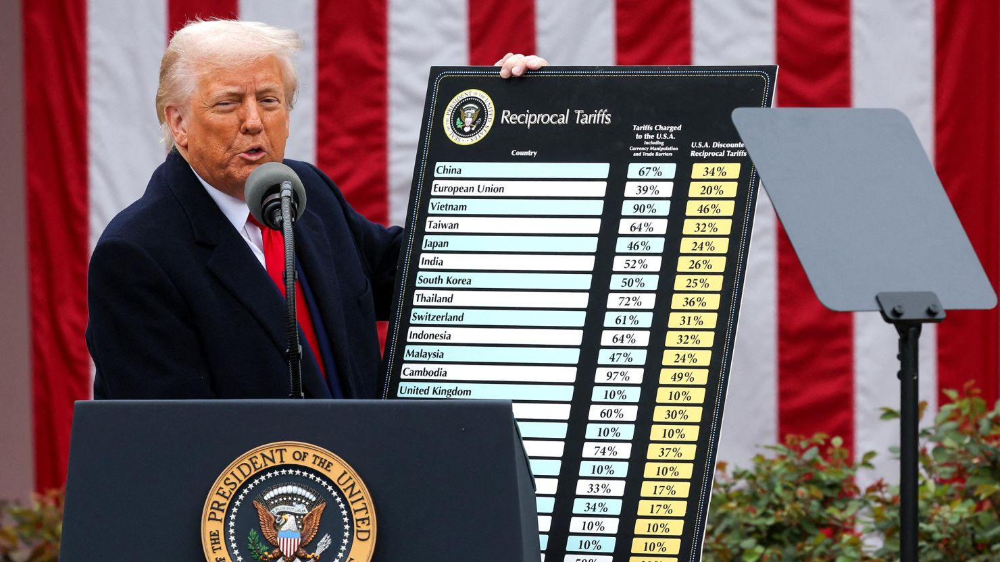

Hong Kong’s Budget Deficit: Causes and Cures for a Sustainable Fiscal Future
Tim He
Hong Kong must prioritize long-term revenue diversification over short-term cost-cutting.
Over the past few days, the Department of Finance and Financial Secretary Paul Chan have likely been working
intensively to identify feasible government spending cuts in order to achieve a balanced budget, as mandated by
Article 107 of Hong Kong’s basic law. The government’s largest areas of expenditure have come under scrutiny, with a
variety of spending cut proposals such as the adjustment of the $2 public transport scheme, the freezing of civil
servant salary, and even raising fees for non-urgent accident and emergency public hospital room visits. Although
these cost-cutting measures may provide some relief in the short term, it does not address the crucial issue of the
government’s over reliance on land sales and taxes for revenue generation.
Government land premium revenue, constituting around 20% of total government revenue post-Covid, dropped to $3.7b
as of October 2024, missing the government target of $33b by 88.8% and marking a decrease of 81% from the 23/24
fiscal year. Other non tax revenue such as investment returns, which makes up 13.9% of total revenue in 23/24, are
highly volatile and subject to unpredictable market fluctuations. Simultaneously, Hong Kong faces a rapidly aging
population which necessitates increased government spending on areas such as transportation and healthcare. This
demonstrates how over reliance on relatively undiversified income sources can increase vulnerability in government
finances. Thus, to balance the budget in the long run, we should aim to explore a range of options for further
revenue growth instead of cutting expenditure revolving around critical public services such as transport,
education, and healthcare.
Initiatives by the government for long term economic growth such as the Lantau Tomorrow Vision and the Northern
Metropolis could help reach this goal. However, some of these infrastructure projects unfortunately face delays
amidst the current financial turmoil, alongside negative public sentiment. Further private sector involvement in
partially shouldering the financial burden of such projects should be pursued to reduce current government
expenditure but still continue their development.
In conclusion, it is not to say some short term adjustments are not necessary or helpful, or that we have not
looked into any plausible alternatives, but more attention and emphasis should be given towards possibilities
surrounding sustainable revenue generation and growth.
Economic History: Parallels between Trump’s “Liberation Day” and Hoover’s Smoot-Hawley
Sebastian Zhu
Donald Trump, the 45th and now 47th US president, announced on the second day of April a series of “reciprocal
tariffs” on countries from China to the Falkland Islands, a remote archipelago known for penguins. The quantity of
tariffs is unrivaled in recent history: tensions quickly escalated, sparking an international trade war with
retaliatory actions taken by China and the EU.
“We should beware of the demagogues who are willing to declare a Trade war against our friends, weakening our
economy, our national security, and the entire free world, all while cynically waving the American flag.” — Ronald
Reagan
President Herbert Hoover signed the Smoot-Hawley tariff act on June 17, 1930 despite opposition from Democrats,
protests from foreign governments, and a petition signed by over 1,000 economists (Gerlach). It raised levies by
another ~25% on almost all foreign imports on top of a preexisting average of 38.5% on dutiable imports from the
Fordney-McCumber Tariff of 1922 (Kaplan).
The policy had the goal of protecting domestic US industries, especially the agriculture sector. Contrary to
nation-wide economic prosperity during the Roaring Twenties, average farm incomes declined from 1920 to 1929. While
his initial pledge during the election campaign focused on tariffs for agricultural products, the policy was
eventually extended due to pressure from business leaders and other Republican party members (O’Brien).
Economists are generally uniform in their criticism of protectionist policies in the form of tariffs.
Theoretically, tariffs do not change capital, labour, or technology, and would therefore have little macroeconomic
impact on indicators such as employment. However, in the short term, with raising the price of imported goods, a
tariff should increase the net export by reducing the total import (M) without any direct effect on total export
(X). Thus, Gross Domestic Product would increase relative to its previous level: GDP is equal to the aggregate
expenditure, which can be calculated by Y = C + I + G + (X - M). This underpins logic behind protectionist tariff
policies such as Smoot-Hawley, which sought to ameliorate falling investment and consumer spending during economic
downturns.
Nevertheless, an essential postulate of the previous analysis is that there is no significant retaliation by
trading partners that would negatively affect US exports. In the case of Smoot-Hawley, Canada, Cuba, Mexico, France,
Italy, Spain, Argentina, Australia, New Zealand, and Switzerland all imposed retaliatory tariffs. American exports
fell by an average of 31% to these countries (Mitchener). The exact effects of these retaliatory measures are hard
to pinpoint, as they amplified an already plunging global trade during the Great Depression. One thing is certain:
the tariff didn’t work out how the Hoover administration would have liked it to.
“I am a Tariff Man. When people or countries come in to raid the great wealth of our Nation, I want them to pay
for the privilege of doing so. It will always be the best way to max out our economic power. We are right now taking
in $billions in Tariffs. MAKE AMERICA RICH AGAIN” — Donald Trump
Despite the official US Senate website referring to the Smoot-Hawley tariff act as being “among the most
catastrophic acts in congressional history”, Trump commended it but stated that it was too late (“The Senate”). On
the 2nd of April, Trump imposed his own set of sweeping tariffs, ranging from 10% on the United Kingdom to 49% on
Cambodia.
Within days of the policy, a global trade war has already begun. China has recently capped its retaliatory tariffs
at 125%, calling tariff strategies from the White House “a joke”. The EU imposed 25% retaliatory tariffs, although
this was suspended for negotiations after Trump reduced US duties from 20% to 10%. Other global leaders which did
not retaliate reprimanded this policy, with Australian Prime Minister Anthony Albanese stating that the tariffs
“have no basis in logic” and that they are “not the action of a friend”.
The tariffs disrupted global economies and assets as soon as they were announced. $10 trillion USD in global equity
value was wiped out over three days, with the S&P 500 suffering its worst losses since its creation in the 1950s.
Crude oil prices dropped below $60 per barrel, lowest since 2021. Bitcoin fell by 30% since Trump’s inauguration
(Chughtai). Interest rates for US Bonds, usually a safe asset for investors, have increased due to higher
uncertainty and perceived risk.
Perhaps intimated by political backlash and harsh economic statistics, Trump has currently suspended all reciprocal
tariffs aside from ones placed on China. He has even exempted smartphones and computers from China from tariffs, its
biggest export to the United States. Conflicting with the policy objective of moving high-tech productions to the
US, this was likely due to pressure from tech giants such as Apple and Nvidia.
“We call a tariff a protective measure. It does protect; it protects the consumer very well against one thing.
It protects the consumer against low prices.” — Milton Friedman
There is a fundamental difference between the Smoot-Hawley act and the Trump tariffs of 2025, which lies in their
purpose. The Smoot-Hawley tariff act is one to reduce domestic unemployment, and Trump’s biggest objective is to
“stop other countries from robbing the United States of America” with the reduction of trade deficits. Regardless,
both have caused slowing global trade and negative effects on US and foreign economies. We already know the
historical result of the Smoot-Hawley; the policies from Donald Trump have been and remain extremely unpredictable.
Only time will tell the long-term ramifications that arise from the political chaos of 2025.
This article is up-to-date as of April 19th, 2025.
Chughtai, Alia, and Mohammed Haddad. "Eight charts that reveal the economic impact of Trump's tariffs." Al
Jazeera, 9 Apr. 2025,
www.aljazeera.com/economy/2025/4/9/eight-charts-that-reveal-the-economic-impact-of-trumps-tariffs.
Gerlach, Stefan. "When protectionism backfired: The Smoot-Hawley Tariff Act of 1930." EFG,
www.efginternational.com/us/insights/2025/when_protectionism_backfired_the_smoot-hawley_tariff_act_of_1930.html.
Kaplan, Edward S. "The Fordney-McCumber Tariff of 1922." Economic History Association, EHA,
eh.net/encyclopedia/the-fordney-mccumber-tariff-of-1922/.
Mitchener, Kris James, et al. "The Smoot-Hawley Trade War." The Economic Journal, vol. 132, no. 647, 1 Feb. 2022,
pp. 2500-33, https://doi.org/10.1093/ej/ueac006.
O'Brien, Anthony. "Smoot-Hawley Tariff." Economic History Association, EHA,
eh.net/encyclopedia/smoot-hawley-tariff/.
"The Senate Passes the Smoot-Hawley Tariff." United States Senate, The Senate Passes the Smoot-Hawley Tariff.
How did the implementation of Trump’s tariffs on imports affect global trade dynamics, and what are the
potential consequences for global economic stability and recession?
Athena Yip

“The biggest loser of this is definitely the U.S. itself,” says Yuan Mei, assistant professor in the School of
Economics at Singapore Management University.
“It will be difficult for the U.S. to avoid a recession if the tariffs stay at the level that’s been announced,”
Claudia Sahm, chief economist at New Century Advisors, recently told TIME (Jeyaretnam).
Both economists are referring to the same thing, the new tariffs announced by President Trump after his reelection
in 2025 (Jeyaretnam). Economist worldwide seems to believe the biggest victim of tariffs is the United States
herself. The Americans are all at risk of raised tax. Taxing all imports will lead to significant cost for local
businesses which means increased price for local consumers, bringing the United States into a recession and a
sustained economic decline.
A nation-wide recession in the United States undoubtedly will affect economies worldwide. Last week, J.P. Morgan
increased its forecast of the global economy entering a recession by year-end from 40% to 60% (Jeyaretnam). The
effects of the tariffs is described as “a dampening of global demand and production” in both the US and around the
world, according to Ja-Ian Chong, associate professor of political science at the National University of
Singapore.
There are two outcomes off the tariffs. American importers will either choose to absorb the cost or pass on some or
all the cost onto Ameircan consumers (Jeyaretnam). If they choose the first, their profitability decreases which
would lead them to change their cost structure, for example, downsizing operations or firing workers. Though most
likely, they would choose the second causing consumers to tighten their spending habits and resulting in decreased
demand both American and foreign, even possibly resulting in layoffs. Kristina Fong, an economic affairs researcher
at Singapore-based think tank ISEAS-Yusof Ishak Institute’s ASEAN Studies Center says “Basically, you will be
impacted in several ways, no matter how you look at it.”
Not only are countries who directly import to U.S. are affected, others in the production chain are too. Most
products aren’t made and assembled in one country, they use components imported from several places (“The Impact of
Trump’s Proposed Tariffs.”). With a lower demand in the US, goods do not move into the country, the demand for
components that goes into assembling them will also decline. For countries that decide to retaliate against U.S.
tariffs such as China, demand of products from the U.S. would decline, therefore producers of the components used to
make the product would also be impacted (Lawder).
During Trump’s first term, trade tension had pushed firms located in China who still wants to maintain a stable
relationship with U.S. consumers to relocate to other parts of the world (Lawder). Southeast Asia benefited
significantly from this change and American consumers didn’t feel impacted. However, there will be a broader effect
this time given the fact that tariffs had been announced worldwide. Vietnam, Cambodia and Bangladesh were hit with
46%, 49% and 37% tariffs respectively. All 3 countries will face significant economic strain since they export
heavily to the U.S. Last year, Bangladesh exported $7.34 billion worth of goods to the U.S., it’s top export
destination. Vietnam is equally at risk, manufacturing 50% of Nike’s footwear and 39% of Adidas. OCBC estimates it
could lose over 40% of total exported goods due to high tariffs, which may lead some to relocate their factories or
even decreased investments in the country (Zandt).
According to Ivan Png, an economist at the National University of Singapore, the U.S. tariffs could affect prices
for consumers outside of the U.S. with major exporters such as China redirecting their exports to other countries
that set lower tariffs. If true, production will remain high and prices will be changed to appeal to smaller
markets. This will lead to disruptions to the global supply chain could in turn lead to unintended
consequences such as increased production costs that may be passed onto consumers. Despite the possible
consequences, many counties have began diversifying their trade patterns and engaging with “more reliable” trading
partners such as China (News, PBS). Others have rushed to negiosiate with Trump with the hopes of reducing negative
economic effects. Vietnam, recently hit with 46% tariff offered to bring its tariff on U.S. products down to none
at all though the U.S. still refused the deal (News, PBS). Clearly, removing or reducing tariffs on the U.S. isn’t
enough for Trump, he wants the countries to buy close to equal the amount of U.S. goods as the U.S. buys from
them.
Many criticise this approach. “These tariffs will not produce that,” Menon says. “Nothing will produce that,
because that’s not what trade is about. The way to balance your trade is not to trade at all. You trade with
countries because they do things differently and with different costs and prices than you can.” Even if Trump
ultimately backs down and reverses or lowers many of the tariffs he’s levied on the world, to some extent, Menon
says, the damage has already been done. “In a matter of a few months, the U.S. has thrown away decades of goodwill
with its allies by taking on this kind of ludicrous stance. When you come out and start penalizing your friends with
tariffs based on a nonsensical formula… there’s no turning back.”
The implementation of Trump’s tariffs had already began reshaping global trade dynamics. The repercussions of these
tariffs span from immediate cost to American consumers and businesses to global supply chains, potentially even
triggering widespread economic instability. The long term effects on international relations and economic
partnerships may lead to a reconfiguration of global trade networks and lasting implications for economy worldwide.
The path forward depends greatly on the ability of nations to navigate these challenges and find common ground.
Works Cited
Jeyaretnam, Miranda. “How Trump’s Tariffs Could Lead to a Global Recession.” TIME, Time, 9 Apr. 2025,
time.com/7275987/trump-tariffs-global-economy-recession-trade-war-asia-world-impacts/. Accessed 12 Apr. 2025.
“The Impact of Trump’s Proposed Tariffs.” ITEP, 2024, itep.org/trump-tariffs-tax-increase-impact/. Accessed 12
Apr. 2025.
Lawder, David. “Trump Upended Trade Once, Aims to Do so Again with New Tariffs.” Reuters, 16 Jan. 2025,
www.reuters.com/markets/us/trump-upended-trade-once-aims-do-so-again-with-new-tariffs-2025-01-16/. Accessed 12
Apr. 2025.
News, PBS. “Analysis: The Potential Economic Effects of Trump’s Tariffs and Trade War, in 9 Charts.” PBS News, 2
Feb. 2025,
www.pbs.org/newshour/economy/analysis-the-potential-economic-effects-of-trumps-tariffs-and-trade-war-in-9-charts.
Accessed 12 Apr. 2025.
Zandt, Florian. “Infographic: Trump Tariff Plans Would Hit Most Important Trade Partners.” Statista Daily Data,
Statista, 29 Jan. 2025,
www.statista.com/chart/33851/countries-with-the-highest-value-of-good-imported-into-exported-from-the-us/.
Accessed 12 Apr. 2025.
Is History Repeating Itself? A Comparison of Trump’s Tariffs and the Smoot-Hawley Incident
Amy Liu
“Those that fail to learn from history are doomed to repeat it” — Winston Churchill
It started with the forgotten depression that lasted from January to July in 1921. The US stock market dropped
significantly, and corporate profits plummeted. Unemployment surged to remarkable levels, especially in comparison
to the previous war period. In the aftermath of that war, the US faced a tricky transition. Factories shut down, and
many soldiers returned home to flood the workforce. Inflation soared. In response, the government cut spending
drastically and hiked interest rates sharply. The result was a severe collapse in industrial production, the worst
recorded at the time. Prices plunged, leading to mass business failures and leaving millions struggling to
survive. The real turnaround came when the federal government cut government spending by 65% from 18.5 billion to 6
billion. This helped stabilize the economy and eventually fueled growth in the Roaring 20s. By the spring of 1921,
President Warren G Harding had taken over, marking a period of changes back to higher tariffs.
Protectionism refers to government policies that restrict international trade: limit imports, allowing domestic
industries a better chance to thrive. Tariffs are the most common means of restriction. They serve as taxes on
imported goods, making foreign products pricier and encouraging local purchases. America's early days were heavily
marked by protectionism, but in the late nineteenth and early twentieth centuries, the country experienced a phase
of relatively free trade, prompted by the Underwood-Simmons tariff of 1913 that lowered tariffs and introduced an
income tax. However, WW1 shot the US back into protectionism. Once WW1 ended, Europe’s economy was recovering, and
US industries had competition as the farmers who sold crops to Europe during the war were losing the market as
Europe’s agricultural industry was rebounding.
A significant turning point came in 1922 with the Fordney McCumber Tariff, which raised tariffs much higher than
previously seen. This law also allowed the president to adjust tariffs significantly to balance domestic and foreign
production costs, aiming to protect US industries from competition. However, this tariff had consequences, as it
crippled European exports to the US and heightened global tensions. War-torn nations found it challenging to repay
debts, deepening the crisis instead of aiding global recovery. Meanwhile, tariffs in the US climbed through the
following decade, distorting the international trading landscape.
The 1920s emerged as a decade of wild growth in the US—an era marked by extraordinary consumerism. People poured
money into stocks, driving prices to dizzying heights. However, the market was unsustainable, and it was poised for
a dramatic crash. Everything changed in October when the stock market began its catastrophic decline. This marked
the onset of widespread panic and resulted in an irreversible loss of value across the market.
As the market collapsed, everything else soon followed. The economy froze, banks failed, and businesses went
bankrupt, resulting in mass unemployment. Consumers, witnessing their wealth evaporate, halted spending. Factories
and stores closed, bringing the entire nation to a standstill. Farmers, already grappling with post-war
overproduction, faced plummeting crop prices and unmanageable debts. Then came a fateful decision from the
government.
President Herbert Hoover, under pressure, decided to sign the Smoot-Hawley Tariff Act into law in 1930. The bill
was originally meant to help struggling farmers by raising duties on agricultural imports. But it didn’t stay that
simple. Various industries saw an opportunity and lobbied for tariffs on all sorts of products. By the time the bill
was passed, it was a full-scale tariff hike on over 20,000 foreign goods.
Soon, various countries retaliated with their tariffs aimed directly at US goods, initiating a trade war that
escalated tensions globally. The largest trading partner at the time, Canada, with 18% of all exports going to
Canada and receiving 11% of Canada’s responded, aiming to protect its economy. Canadian Prime Minister at the time,
William Lyon Mackenzie King, slapped tariffs on just 16 American products. But when RB Bennett took over in 1930, he
cranked up the pressure. Canada raised tariffs even further on US goods while simultaneously cutting tariffs on
roughly 270 products from the United Kingdom and its dominions. By 1932, Canada hosted a massive trade summit with
the other British territories, laying the groundwork for a trade bloc that actively excluded the US.
Canadian exports to the UK surged, especially in agriculture. The very industry Smoot-Hawley was meant to protect.
But this was just the start. A total of 25 countries would eventually strike back with tariffs of their own.
Countries already struggling from the Great Depression suddenly faced even higher barriers to selling goods to the
US, making an already bad situation worse. US exports to retaliating nations fell by 28 to 32%. Even countries that
didn't retaliate still cut US exports by 15 to 23%. Global trade collapsed, dropping by 66% between 1929 and
1934.
How do Trump’s proposed tariffs impact long-term GDP growth in the US?
Eason Huang
How has Trump’s planned withdrawal of EV subsidies affected car producers?
Thomas Wu, Samson Suen
The planned withdrawal of electric vehicle (EV) subsidies under the Trump administration has complex implications
on the EV market. Initially the demand side subsidy, of $7500 tax credits for EV’s under $80000, this subsidy
positively increased sales across multiple brands. For example, with General motors (GM) its sales were reported by
21% increase in sales, while other manufacturers such as Honda, Hyundai, and Nissan each saw 10% growth in sales
(Boudette, 2025).
Figure 1: Effect of demand side subsidies.
The subsidy, funded by the US government, as shown by area (A, B, C, D, E, F in Figure 1), shifts the demand curve
from the right (from Q1 to Qsub) reflecting the increase in EV sales which is supported by the
previous data. By incentivising consumption of EVs a merit good (as it reduces the consumption of fossil fuels
vehicles) mitigating negative externalities in the form of pollution, which inflict additional costs on society. As
illustrated by the data and the graph this leads to increased sales and revenue for EV producers.
However, this subsidy carries an opportunity cost, the allocated funds (A, B, C, D, E, F) could have been diverted
to alternate public investment such as infrastructure development. Additionally, given the US’s severe national
debt, continued subsidies risk widening budget deficits exacerbating debt levels. Additionally, using demand side
policies result in a deadweight loss (area F), causing the loss of allocative efficiency within a market.
Figure 2: Market for EVs after announcement of withdrawal of subsidies in U.S.
The withdrawal of subsidies will increase the effective cost of EVs. Therefore, in anticipation of the increase in
costs, demand will increase in the short run as consumers may decide to purchase an EV before the withdrawal of the
subsidies to take advantage of the tax credits. This is demonstrated in Figure 2, where demand shifts right from
D1 to D2 in the short run, resulting in an increase in price and quantity from P1
to P2 and Q1 to Q2, respectively.
However, in the long run, when the subsidies have been withdrawn, the effective cost of EVs will increase as
consumers no longer receive the tax credits as a benefit. As depicted in Figure 2, demand shifts left from
D1 + subsidy to D1 due to consumers opting out. Following the increase in price from
P1 to P2, consumers may choose substitute goods of EVs, such as fossil fuel vehicles, which
may be cheaper.
Figure 3: Market for fossil fuel vehicles.
An increase in demand for fossil fuel vehicles raises another issue: sustainability. Fossil fuel vehicles are the
largest contributor to greenhouse gas emissions in the US, accounting for 28% (United States Environmental
Protection Agency). As such, fossil fuel vehicles have negative externalities of consumption, in which using them
results in external costs, such as the worsening of the global warming crisis. This is demonstrated in Figure 3,
where marginal social benefit (MSB) is less than marginal private benefit (MPB), resulting in the previously
mentioned external cost and deadweight loss (shaded).
Works Cited
Bloomberg. “Trump Orders Removal of EV-Favoring Policies and Subsidies.” Energy Connects, 21 Jan. 2025,
www.energyconnects.com/news/renewables/2025/january/trump-orders-removal-of-ev-favoring-policies-and-subsidies/.
Accessed 25 May 2025.
United States Environmental Protection Agency. “Carbon Pollution from Transportation.” US EPA, United States
Environmental Protection Agency, 14 May 2024,
www.epa.gov/transportation-air-pollution-and-climate-change/carbon-pollution-transportation.
Boudette, N. E. (2025, January 3). E.V. Demand Leads Automakers to a Strong 2024 Finish. Nytimes.com; The New
York Times. https://www.nytimes.com/2025/01/03/business/ford-gm-vehicle-sales.html
How billionaires/millionaires pay less taxes using offshore accounts
Joseph Wu
What are the economics and repercussions of China’s electronic vehicle boom?
Sebastian Ng
Throughout the streets of Hong Kong, it has been shocking to see acclaimed European car dealerships such as
McLaren, Ferrari, or Mercedes eminently replaced by the sudden influx of Chinese car dealerships. This notable shift
in a global financial hub like Hong Kong reflects the broader changes found within the global automotive landscape.
More specifically, the growing presence of Chinese EVs and their economic implications for their dominance over such
a propelling market.
Currently, China, the factory of the world, has cemented itself as the world’s largest EV producer and exporter, as
it accounts for 50% of global EV production & sales. However, the foundation was laid out by a forward-thinking
national strategy set in 2009. The government, eager to grow its presence within the industry, recognised that
traditional automakers in the US, Japan, and Europe had a deadlock over vehicles with internal combustion engines.
Rather than attempting to cut through such a colluded market, they decided to heavily emphasize EV development, even
establishing it as a core national strategy. Eager to beat the rest of the world to this market, the government set
ambitious targets, aiming to accelerate the adoption of new energy vehicles (NEVs). Explicitly, their goal was to
reach the production and sales of 500,000 NEVs by 2012, representing 5% of passenger car sales.
The ambitious goals of the Chinese were greatly assisted by their aspiring financial support and subsidy programs.
This included a fund of 10 billion yuan, which allocated grants and discounted loans to incentivise further industry
investment. To stimulate demand, the government implemented substantial buyer subsidies and reimbursements that
reached up to 60000 yuan, significantly reducing the cost of EVs for consumers. Further invigoration was carried out
through exemptions from a 10% sales tax on EV purchases, incentivising the average consumer. This extreme
governmental support has laid the foundation for Chinese manufacturers, BYD, NIO, and Xpeng. The former has shown
strong profitability, doubling its net profits to about 9.15 billion yuan in the first quarter of 2025. Furthermore,
it benefits from strong economies of scale, evidenced by the lowering of unit production costs.
Though this shows to be a daring approach to market success, competing countries would argue that it is
illegitimate. According to the World Trade Organisation (WTO), subsidies that confer an unfair advantage and harm
the industries of other countries should be subject ot countervailing measures, such as tariffs. With the heavy
investments poured into the market by the Chinese government, tensions have risen with other global superpowers,
accusing them of unjust trading, benefiting from unfair advantages due to governmental subsidies. On June 12, 2024,
the European Commission announced tariffs ranging from 17.1% to 38.1% on imported Chinese EVS. Such trade
restrictions have intensified geopolitical tensions between other powers, such as the United States, of whom
increased tariffs of 100% in 2024 and with the Trump administration in 2025, it has risen to over 247%.
The constant strain between China and the West has no doubt been a recurring theme in the past decades or even
centuries. Chin, much like many instances in the past, accuses the European Union, Canada, and the United States of
being discriminatory, aiming to contain China’s prospering economic growth. They in fact have appealed to the WTO,
claiming that rules have been violated, undermining global cooperation.
Due to the implementation of global trade policies such as tariffs and import restrictions, China’s EV industry has
had to recalibrate its subsidisation laws, seeing a slight decrease in market value, as its EV exports to areas such
as the EU has nearly 20%. However, Chinese EV company BYD currently still stands as the world’s top EV producer,
defying the odds of global pressures. The accusations towards China’s EV market, whether discriminatory or
protectionist, stand as a symbol of growing tensions between it and Western competitors. China continues to defend
its actions vigorously, standing against the punishments that would take so heavily away from its forward-thinking
investments.
Works Cited
Boudette, Neal E. “China’s Electric-Vehicle Industry Is Booming. The U.S. and Europe Are Trying to Catch Up.” The
New York Times, 12 July 2023, https://www.nytimes.com/2023/07/12/business/china-electric-vehicles.html.
International Energy Agency (IEA). Global EV Outlook 2023. IEA, 2023,
https://www.iea.org/reports/global-ev-outlook-2023.
Lo, Kinling. “How China Became the World’s Electric Vehicle Giant.” South China Morning Post, 15 Nov. 2022,
https://www.scmp.com/business/china-business/article/3198248/how-china-became-worlds-electric-vehicle-giant.
McKinsey & Company. “China’s Electric Vehicle Market: The Road Ahead.” McKinsey Insights, 2023,
https://www.mckinsey.com/industries/automotive-and-assembly/our-insights/chinas-electric-vehicle-market-the-road-ahead.
Naughton, Barry. The Chinese Economy: Adaptation and Growth. MIT Press, 2021.
Reuters. “China’s EV Subsidies and Policies: A Timeline.” Reuters, 10 March 2024,
https://www.reuters.com/business/autos-transportation/chinas-ev-subsidies-policies-timeline-2024-03-10/.
What impacts will Trump’s tariffs have on inflation, and how will this affect the U.S. economy?
Sofie Tse
Within his first month back in the White House, President Trump has already begun imposing aggressive new tariffs –
particularly on imported goods from Mexico, Canada and China. Many economists warn that these protectionist measures
are likely to result in inflationary pressures, not only on imported goods but good across the entire U.S. economy.
As the import prices increase, domestic producers relying on these goods will face higher production costs, forcing
them to raise prices. At the same time, increased demand for now-more expensive American made products could push
inflation even higher. This conflict mirrors the inflationary spiral of Trump’s 2018=2019 trade wars, when tariffs
added an estimated 0.3 percentage points to annual inflation (Iacurci).
One of the primary reasons behind these protectionist measures is to address trade imbalances, and achieve balance
of payments equilibrium – as they attempt to lower the volume of imports and increase spending on domestic products.
By making foreign goods more expensive, tariffs are intended to shift demand onto domestic produced alternatives,
thus improving trade balance. Another key driver of tariffs would be to act as a shield for domestic industries
against foreign competition, protecting struggling industries that are not able to compete with cheaper imports.
Despite the fact that tariffs may temporarily reduce imports, they do not necessarily ensure a sustainable
improvement in the balance of payments. Retaliatory measures imposed by partners can erode export revenues and
increase the cost of domestic production, which ultimately undermine the benefits of these policies.
These tariffs have already imposed short term impacts such as rising prices on imported goods. The average tariff
rate on all imports will rise from 2.5 percent in 2024 to 16.5 percent—the highest average rate since 1937—under the
Trump tariffs announced for 2025. Tariffs will cause imports to fall by slightly more than $800 billion in 2025, or
25 percent (Penn). These tariffs do not merely affect consumer goods, they also impact goods and raw materials that
U.S. companies rely on for manufacturing. As a result, domestic producers face rising manufacturing costs, which
they
will likely pass on to consumers, thereby contributing to broad-based price increases. This cost-push inflation is
expected to disrupt global supply chains especially for industries reliant on foreign components, such as
automotive, electronics and machinery. While tariffs aim to boost domestic production, expanding U.S. manufacturing
takes time, meaning supply will not be able to immediately keep up with demand – this mismatch will fuel inflation,
especially for goods with few substitutes. Furthermore, as of April 4th 2025, China, Canada, and the European Union
have imposed retaliatory tariffs altogether affecting $330 billion of US exports (Mena). These retaliatory measures
make American goods more expensive abroad, lowering the demand for U.S. exports, and squeezing American farmers,
manufacturers, and exporters – many of whom rely heavily on international markets. The result is a dual setback to
the U.S. economy: higher domestic prices, and reduced revenue from abroad. Moreover, the broader economic
environment
shaped by the imposition of tariffs could lead to a decline in global confidence in the U.S. as a reliable trading,
and investment partner. If these tariffs lead global governments and private investors to perceive the U.S. as
pursuing protectionist policies that destabilise global trade, they may redirect their investments toward other
economies perceived as more stable or cooperative. This could further weaken the U.S. position in global markets, as
its ability to attract foreign capital diminishes.
While analysing the overall impact of these tariffs, it is key to look into the long-term impacts they will have on
the United States. Trump’s tariffs would act like a hidden tax on American consumers and businesses, ultimately
dragging down the economy over time. By raising the prices on imported goods, consumption falls 3.5 percent in 2030,
and over 3 percent in 2054, reflecting a sustained drag on purchasing power (Jones). According to Federal Reserve
Chair Jerome Powell, “We face a highly uncertain outlook with elevated risks of both higher unemployment and higher
inflation,” he said at an event just outside Washington, DC. “While tariffs are highly likely to generate at least a
temporary rise in inflation, it is also possible that the effects could be more persistent.” (Ishai). Moreover, if
businesses respond to prolonged tariffs by reshoring production, the transition could be slow yet costly, keeping
prices elevated for years. Higher production expenses would likely be passed down to consumers, leaving inflation
embedded in the U.S. economy. The prolonged rise in costs for businesses could weaken their competitiveness in
global
markets, discouraging innovation and investment. This could slow overall economic growth, reducing the U.S. ability
to remain a global economic leader. Lastly, the regressive impacts of tariffs could have significant adverse impacts
on the broader economy, by changing consumer behavior and reducing aggregate demand. The reduction in consumer
spending due to the rising prices (even of domestic goods), will heavily impact America’s economic growth. Since
consumer spending is a substantial portion of GDP, a decline in demand for goods and services decreases economic
activity, and will eventually create a drag on growth, as businesses face reduced revenues and are less likely to
invest in expansion or innovation.
Ultimately, while tariffs may temporarily shield certain industries, their long-term economic consequences –
reduced consumption, persistent inflation, and weaker global competitiveness could far outweigh any temporary
protectionist measures. Without the implementation of policies to boost productivity or supply strains, the U.S.
risks entering a prolonged period of diminished economic vitality and higher costs for households and businesses
alike.
Works Cited
Horsley, Scott. “Inflation Is Cooling -- but Trump’s Tariffs Could Upend Things.” NPR, 10 Apr. 2025,
www.npr.org/2025/04/10/nx-s1-5358985/consumer-prices-inflation-trump-tariffs-economy. Accessed 26 Apr. 2025.
Iacurci, Greg. “Tariffs, Trade War Inflation Impact to Be “Pretty Ugly” by Summer, Economists Say.” CNBC, 10 Apr.
2025, www.cnbc.com/2025/04/10/tariffs-trade-war-inflation-impact-to-be-pretty-ugly-by-summer.html. Accessed 26
Apr. 2025.
Ishai Melamede. “Nearly Two-Thirds of Americans Disapprove of Trump Tariffs, with Inflation a Broad Concern:
POLL.” ABC News, 25 Apr. 2025,
abcnews.go.com/Politics/thirds-americans-disapprove-trump-tariffs-inflation-broad-concern/story?id=121123815.
Accessed 26 Apr. 2025.
Jones, Callum. “Trump’s Tariffs Will Likely Mean “Higher Inflation and Slower Growth”, Says Fed Chair.” The
Guardian, The Guardian, 4 Apr. 2025,
www.theguardian.com/us-news/2025/apr/04/trump-tariffs-higher-inflation-slower-growth-fed-chair. Accessed 26 Apr.
2025.
Mena, Bryan. “Jerome Powell Warns on Trump’s Tariffs: High Inflation Could Be Here to Stay.” CNN, 4 Apr. 2025,
edition.cnn.com/2025/04/04/economy/jerome-powell-fed-tariffs-jobs/index.html. Accessed 26 Apr. 2025.
“Tracking the Economic Impact of the Trump Tariffs.” Tax Foundation, 18 Apr. 2025,
taxfoundation.org/research/all/federal/trump-tariffs-trade-war/. Accessed 26 Apr. 2025.
How will mass deportations affect the US economy?
Claire Fang
How have Trump’s tariffs affected the international supply chain?
Katelyn To
In a world where the supply chain never gets to recover, President Donald J. Trump’s tariff trade war is
jeopardizing an economy that seemed like it was finally returning to normalcy. From launching a trade war the second
he’s back in the office to leading an average tax hike of $1,243 per US household in 2025, Trump’s tariffs have
forced the global supply chain to experience immense distress causing a ripple effect. These tariffs have disrupted
inventory planning and precision of demand forecasting within the supply chain which will “lead companies to pause
or cancel orders and beg or plead with vendors,” according to Brain Wench, CEO of Flat World Global Solutions. Due
to the increased uncertainty, many companies are reducing their purchasing activities with transportation rates
decreasing, logistics firms facing challenges and more.
An example of a threatened supply chain is the automotive industry, one of the most heavily impacted chains since
the tariffs. On what Trump called “Liberation Day”, he announced 25% tariffs on all vehicle imports to the US with
certain exemptions. Following the announcements, stock prices of huge OEMs have significantly decreased including
Ford, GM, Stellantis, Tesla, Rivian and Toyota Motor North America. Shortly after, OEMSs started taking immediate
action starting with JLR pausing all vehicles, Stellantis temporarily laying off 900 US workers and VW group
suspending vehicle shipments from Mexico and Canada, with its Audi division suspending exports to the US from Europe
and Mexico.
The ongoing trade war between the US and China has added another level of uncertainty to the automotive industry,
particularly EVs. Earlier this week, Trump hiked tariffs to 104%, and China responded with tariffs on US imports to
up to 84%. Currently, China faces 145% tariffs on all imported goods and China responds with tariffs of 125% on US
goods. This has impacted Tesla with customer data showing that the US shipped close to $3.1 billion worth of
vehicles to China last year leading to Tesla having to halt new orders in China on US imported models. However,
Europe may potentially be affected by this as its EV supply chain is closely linked and reliant on Chinese
imports.
The good news is that the global supply chain is still arguably one of its most resilient stages in memory. Due to
the pandemic and the geopolitical tensions since 2022, companies have become more flexible and innovative in their
approach. According to Wench, businesses have been navigating these challenges by leveraging technology and data to
make decisions.
“The pandemic taught us we need to allow flexibility in our supply chains, maybe at the cost of pennies,” says
Wench.
Ultimately, while tariffs pose significant changes, there are more optimistic predictions that depend on the
assumption that the current period of instability is temporary. If the disruption is indeed short term, similar to
the period during the first Trump administration, the supply chain may have already endured the worst part. If the
disruptions continue as an effort to isolate the US from the global economy, this period may be considered
straightforward in hindsight.
Works Cited
Engelland, Bryce. “The Global Supply Chain’s Reaction to the Trump Tariffs: Crash, Maneuver & Stand-by - Thomson
Reuters Institute.” Thomson Reuters Institute, 14 Apr. 2025,
www.thomsonreuters.com/en-us/posts/corporates/supply-chains-reaction-tariffs/. Accessed 25 Apr. 2025.
jameslopresti. “How Trump’s Tariffs Are Impacting the Global Supply Chain.” Online Degrees - Florida Institute of
Technology | Florida Tech Online, May 2023,
www.floridatechonline.com/blog/process-improvement/how-trumps-tariffs-are-impacting-the-global-supply-chain/.
Accessed 25 Apr. 2025.
“Tracking the Economic Impact of the Trump Tariffs.” Tax Foundation, 18 Apr. 2025,
taxfoundation.org/research/all/federal/trump-tariffs-trade-war/?utm_source=chatgpt.com. Accessed 25 Apr. 2025.
Hall, Kalea, et al. “Stellantis to Temporarily Lay off 900 US Workers as Tariffs Bite.” Reuters, 3 Apr. 2025,
www.reuters.com/business/autos-transportation/stellantis-says-will-temporarily-lay-off-900-us-workers-following-tariff-2025-04-03/.
Accessed 25 Apr. 2025.
Reuters. “Trump to Exempt Carmakers from Some US Tariffs, FT Says.” Reuters, 23 Apr. 2025,
www.reuters.com/business/autos-transportation/trump-exempt-carmakers-some-us-tariffs-ft-says-2025-04-23/?utm_source=chatgpt.com.
Accessed 25 Apr. 2025.
Articles: (Head of Articles) Konnor Wan; Tim He, Howard Deng, Colin Ngan, Sebastian Zhu, Thomas
Wu, Chloe Luo, Samson Suen, Natalie Yue, Monique Siu, Eason Huang, Helen Dai, Athena Yip, Isabella Sun, Kaleb Lau,
Judy Bai, Amy Liu, Joseph Wu, Bruce Chan, Tony Huang, Richard Zeng, Sebastian Ng, Sofie Tse, Claire Fang, Katelyn
To;
Layout: (Head of Layout) Justin Chen;
Marketing: (Head of Marketing) Sophia Swing; Daisy Chen, Irene Chen, Zoe Wai, Athena Yip, Arthur
Wong, Katelyn To, Jocelyn Tam, Micky Lyu;
Administration: Tim He, Howard Deng, Colin Ngan, Sebastian Zhu, Konnor Wan, Elly Gao;
Interview: Helen Dai, Arthur Wong, Katelyn To, Howard Deng, Colin Ngan;
Filming: Athena Yip, Jocelyn Tam, Sophia Swing, Sebastian Zhu, Tim He;